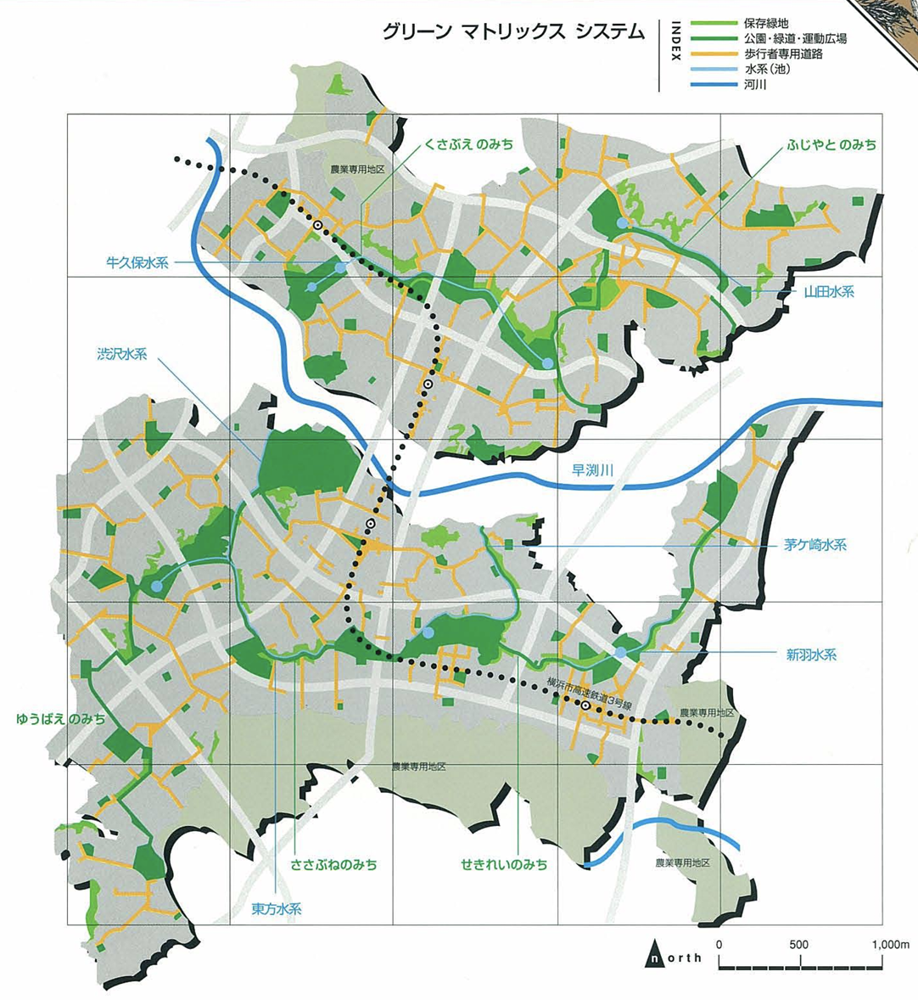
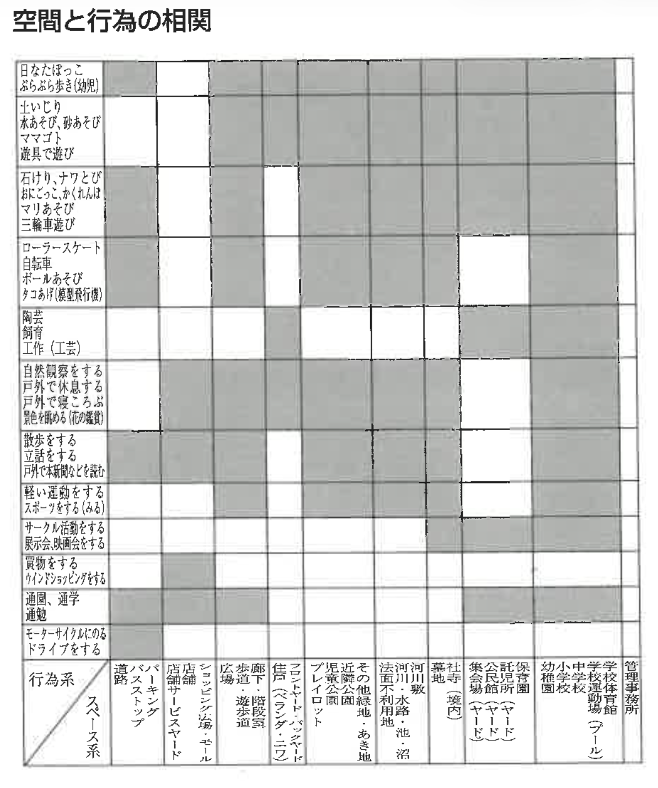
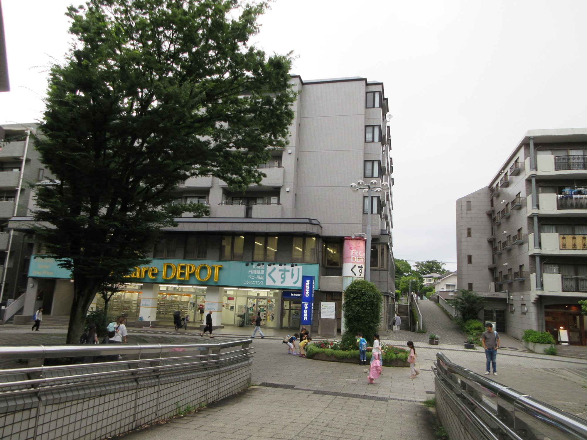
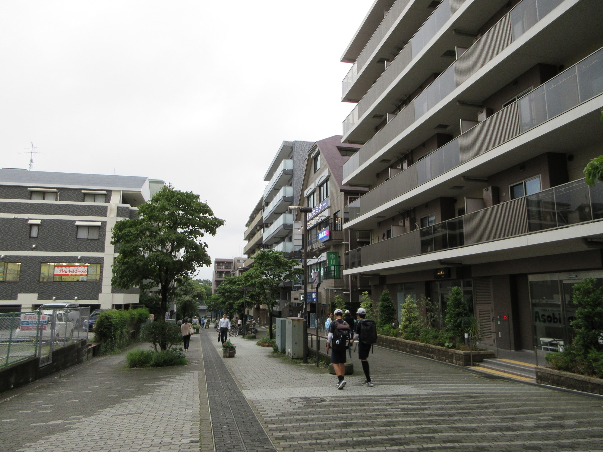
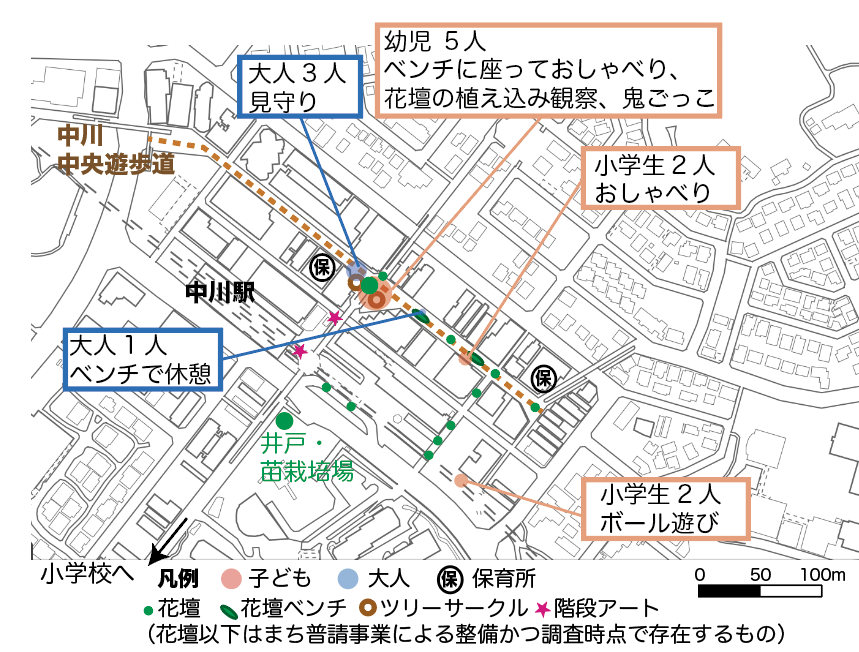

子どもから見たニュータウンの空間の再評価
歩行者専用道とまちづくりの有効性
港北ニュータウンは、神奈川県横浜市都筑区の丘陵地に位置します。約2,500haの区域において、「乱開発の防止」「都市農業の確立」「住民参加のまちづくり」「多機能複合的なまちづくり」を基本理念として、1960年代に横浜市の六大事業の一つとして「港北ニュータウン建設事業」が発表され、1983年にまちびらきが行われました。ここでは、港北ニュータウンの特徴的な空間とその価値を高めるまちづくりが、子どもの遊びや活動にいかに寄与しているのか考察します。
港北ニュータウンの歩行者専用道とは
戦後の大規模ニュータウンの大きな特徴として、歩行者と自動車の動線が計画的に分離されている点が挙げられます。港北ニュータウンは、単に歩行者と自動車の動線を分けるだけでなく、「緑の環境を最大限に保存する」という方針のもと、グリーンマトリックスシステムが導入されました（図1）。これは、地区内の緑道を主な骨格として、学校や集合住宅、企業用地などオープンスペースや屋敷林などの民有の緑を連続させ、さらに歴史的遺産や水系なども総合的にネットワーク化する考え方です。このような多様な空間は、「空間」と「行為」の多様な関係性（マトリックス）を生み出し、個々の空間が単一の用途に限定されず、複合的に使われることを意図して計画されました（図2）。こうしたグリーンマトリックスを構成する基幹的な要素の一つが、歩行者専用道です。これは、日常生活に必要な歩行者や自転車のための動線として、住宅地から駅や学校などを安全かつ快適に結ぶために整備されたものです。


歩行者専用道の価値を高めるまちづくり
一方、港北ニュータウン内の中川地区にある歩行者専用道（中川商店街の中央遊歩道、幅12m）は、近隣のセンター地区に大規模商業施設ができたことで、商店が撤退し、空き店舗が目立つようになっていました。また、遊歩道の幅が12mもありながら、画一的な舗石を並べ樹木も貧弱で無機質な印象、さらに活動する人が少ないことから、自転車が速度を上げて走行し、歩行者にとって危険な場面も少なくない状況でした。
そこで、地域住民を主体とするNPOがこの歩行者専用道などを「誰もが楽しく憩い・交流する広場・空間」に再生するため、2012年、横浜市ヨコハマ市民まち普請事業（※1）に応募し、花壇や街路樹サークル（ベンチ）、ステージなどを整備しました。現在も、地域の人々によって花壇などの管理が続けられています。
子どもが安全に遊べ、歩ける空間
では、このように整備された歩行者専用道は、実際に子どもたちにどのように使われているのでしょうか。中川地区の歩行者専用道の利用実態を把握するため、2026年6～7月の平日15時30分以降に現地調査を行い、世代、人数、行動内容、場所を記録しました。調査では、単に通過・移動している人ではなく、公共空間内の一定の場所に一定時間※2とどまりながら行う活動（滞留）に着目しました。
その結果、図に示すように、花壇の周りで鬼ごっこをしたり、花壇を観察したりする乳幼児や、集団で鬼ごっこをする小学生など、さまざまな子どもの遊びや活動が確認されました。また、通園・通学する子どもの姿も多く見られました。このことから、中川地区の歩行者専用道は、単なる移動のための動線ではなく、子どもが立ち止まり、遊び、歩くことのできる身近な公共空間としての価値もあることが分かります。



2026年7月2日（木）16:30
実践への示唆：歩行者専用道の価値を再評価し、活かす
都市部の子どもにとって、自動車の危険から守られた歩行者専用道は、大きな価値を持ちます。公園のように「遊ぶための場所」として計画された空間ではなくても、歩いたり、立ち止まったり、友達と遊んだりすることのできる、日常生活の中の身近な遊び場となり得ます。また、安心して歩ける通学路としての役割も担います。
一方で、歩行者専用道は、動線を分離するだけでは、殺風景で人が滞留しにくい空間となったり、自転車の速度が上がることで、子どもにとって危険な空間となったりする恐れがあります。歩行者と自転車、通行と滞留、子どもと大人など、異なる利用が共存しながら子どもにとって公園とは異なる価値を持つ空間とするためには、花壇やベンチ、植栽など、人が「歩くだけ」ではなく、立ち止まり、遊び、過ごしたくなるような細やかな設えと、その設えを地域で育てていくまちづくりが重要です。
※1 市民による、 まちづくりへの思いを実現するための施設整備に対して支援・助成を行う横浜市独自の制度。
※2 今回の調査では、概ね10秒以上とどまる活動を「滞留」としてカウントした。
参考文献
1)住宅・都市整備公団（1996）「グリーンマトリックスシステムによる緑の保全と活用」
2)住宅・都市整備公団港北開発局（1997）『港北ニュータウン 四半世紀の都市づくりの記録』
3)都筑区ふるさとづくり委員会（2019）『図説 都筑の歴史』